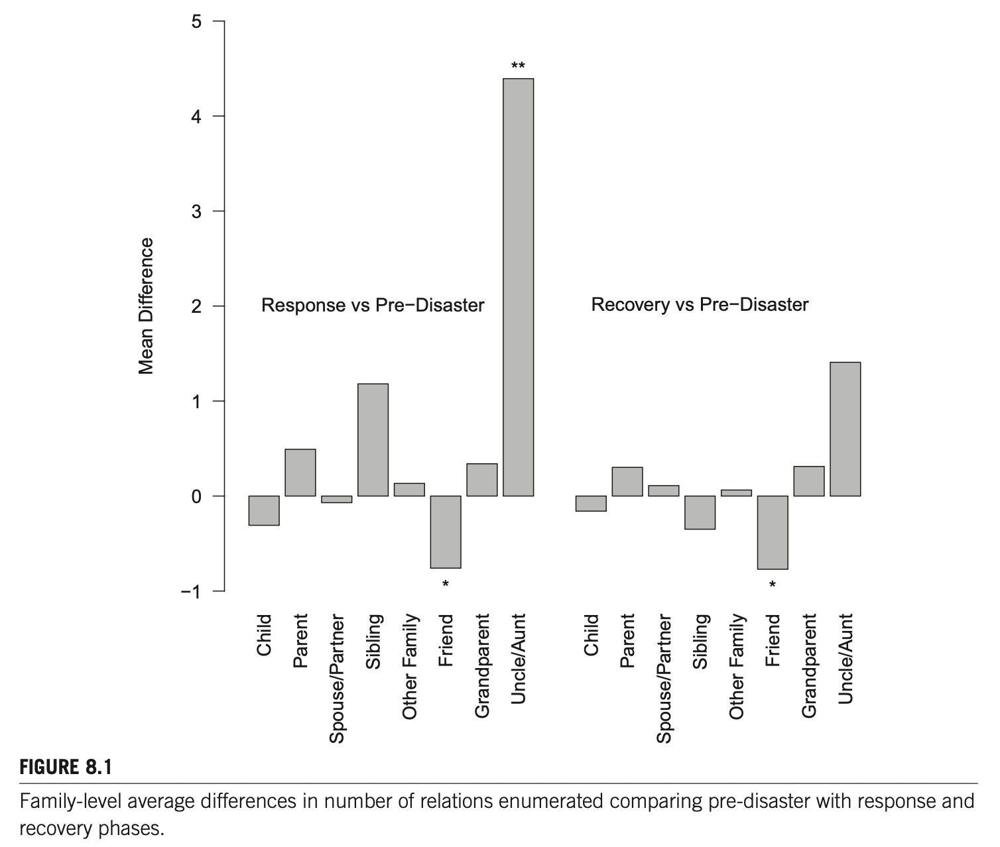
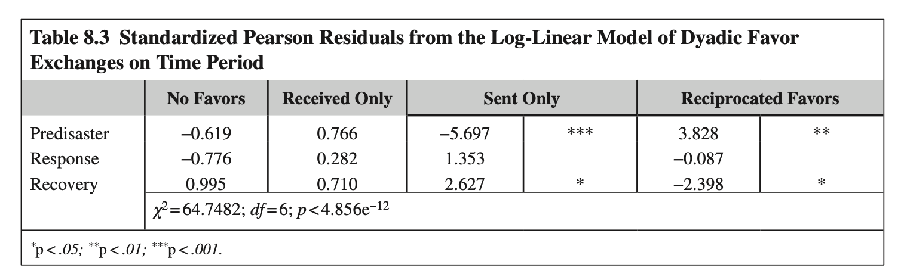

<!DOCTYPE html>
<html lang="ko">
<head>
  <meta charset="UTF-8">
  <meta name="viewport" content="width=device-width, initial-scale=1.0">
  <title>재난관리연구방법론 | Chapter 8. 허리케인 아이크가 개인 네트워크 연계 활성화에 미친 영향</title>
  
  <!-- Google Fonts -->
  <link rel="preconnect" href="https://fonts.googleapis.com">
  <link rel="preconnect" href="https://fonts.gstatic.com" crossorigin>
  <link href="https://fonts.googleapis.com/css2?family=Inter:wght@300;400;500;600;700;800&family=Noto+Sans+KR:wght@300;400;500;700;900&family=Outfit:wght@400;600;700;800&family=JetBrains+Mono:wght@400;600&display=swap" rel="stylesheet">
  
  <!-- MathJax Configuration & Script -->
  <script>
    window.MathJax = {
      tex: {
        inlineMath: [['$', '$'], ['\\(', '\\)']],
        displayMath: [['$$', '$$'], ['\\[', '\\]']]
      },
      options: {
        skipHtmlTags: ['script', 'noscript', 'style', 'textarea', 'pre']
      }
    };
  </script>
  <script id="MathJax-script" async src="https://cdn.jsdelivr.net/npm/mathjax@3/es5/tex-mml-chtml.js"></script>

  <!-- Lucide Icons CDN -->
  <script src="https://unpkg.com/lucide@latest"></script>

  <!-- Mermaid JS for diagrams -->
  <script src="https://cdn.jsdelivr.net/npm/mermaid@10/dist/mermaid.min.js"></script>
  <script>
    document.addEventListener('DOMContentLoaded', function() {
      if (typeof mermaid !== 'undefined') {
        try {
          mermaid.initialize({ 
            startOnLoad: true, 
            theme: 'dark',
            securityLevel: 'loose',
            fontFamily: 'Noto Sans KR, Inter, sans-serif'
          });
        } catch(e) {
          console.warn('Mermaid initialization deferred:', e);
        }
      }
    });
  </script>

  <style>
    :root {
      --bg-primary: #0b1120;
      --bg-secondary: #131c31;
      --bg-sidebar: #0f172a;
      --bg-card: #1e293b;
      --bg-card-hover: #26354d;
      --accent-primary: #38bdf8;
      --accent-secondary: #818cf8;
      --accent-emerald: #34d399;
      --accent-amber: #fbbf24;
      --accent-rose: #fb7185;
      --accent-purple: #c084fc;
      --text-main: #f8fafc;
      --text-muted: #94a3b8;
      --text-dim: #64748b;
      --border-color: #334155;
      --sidebar-border: #1e293b;
      --sidebar-width: 330px;
      --glass-bg: rgba(19, 28, 49, 0.85);
      --glass-border: rgba(255, 255, 255, 0.08);
      --shadow-sm: 0 2px 8px rgba(0, 0, 0, 0.25);
      --shadow-md: 0 4px 16px rgba(0, 0, 0, 0.35);
      --shadow-lg: 0 12px 30px -6px rgba(0, 0, 0, 0.5);
      --radius: 12px;
      --radius-sm: 8px;
      --radius-lg: 16px;
      --transition: all 0.25s cubic-bezier(0.4, 0, 0.2, 1);
    }

    [data-theme="light"] {
      --bg-primary: #f8fafc;
      --bg-secondary: #ffffff;
      --bg-sidebar: #ffffff;
      --bg-card: #ffffff;
      --bg-card-hover: #f1f5f9;
      --accent-primary: #0284c7;
      --accent-secondary: #6366f1;
      --accent-emerald: #059669;
      --accent-amber: #d97706;
      --accent-rose: #e11d48;
      --accent-purple: #9333ea;
      --text-main: #0f172a;
      --text-muted: #475569;
      --text-dim: #94a3b8;
      --border-color: #e2e8f0;
      --sidebar-border: #e2e8f0;
      --glass-bg: rgba(255, 255, 255, 0.9);
      --glass-border: rgba(0, 0, 0, 0.08);
      --shadow-sm: 0 2px 8px rgba(0, 0, 0, 0.06);
      --shadow-md: 0 4px 16px rgba(0, 0, 0, 0.08);
      --shadow-lg: 0 12px 30px -6px rgba(0, 0, 0, 0.1);
    }

    * {
      box-sizing: border-box;
      margin: 0;
      padding: 0;
    }

    html {
      scroll-behavior: smooth;
    }

    body {
      font-family: 'Noto Sans KR', 'Inter', -apple-system, BlinkMacSystemFont, sans-serif;
      background-color: var(--bg-primary);
      color: var(--text-main);
      line-height: 1.85;
      transition: background-color 0.3s ease, color 0.3s ease;
      min-height: 100vh;
    }

    #progress-bar {
      position: fixed;
      top: 0;
      left: 0;
      height: 3px;
      background: linear-gradient(90deg, var(--accent-primary), var(--accent-emerald), var(--accent-amber));
      width: 0%;
      z-index: 1000;
      transition: width 0.1s ease-out;
    }

    .app-layout {
      display: flex;
      min-height: 100vh;
      position: relative;
    }

    /* LEFT SIDEBAR */
    .sidebar {
      width: var(--sidebar-width);
      flex-shrink: 0;
      height: 100vh;
      position: sticky;
      top: 0;
      background: var(--bg-sidebar);
      border-right: 1px solid var(--border-color);
      display: flex;
      flex-direction: column;
      z-index: 100;
      box-shadow: var(--shadow-sm);
    }

    .sidebar-header {
      padding: 1.5rem 1.25rem 1rem 1.25rem;
      border-bottom: 1px solid var(--border-color);
      display: flex;
      flex-direction: column;
      gap: 0.75rem;
    }

    .sidebar-brand {
      display: flex;
      align-items: center;
      justify-content: space-between;
    }

    .brand-badge {
      background: linear-gradient(135deg, var(--accent-primary), var(--accent-emerald));
      color: #ffffff;
      font-weight: 800;
      font-size: 0.75rem;
      padding: 0.25rem 0.65rem;
      border-radius: 6px;
      letter-spacing: 0.5px;
    }

    .theme-toggle-btn {
      background: var(--bg-secondary);
      border: 1px solid var(--border-color);
      color: var(--text-main);
      padding: 0.45rem;
      border-radius: 50%;
      cursor: pointer;
      display: flex;
      align-items: center;
      justify-content: center;
      transition: var(--transition);
      width: 34px;
      height: 34px;
    }

    .theme-toggle-btn:hover {
      background: var(--bg-card-hover);
      color: var(--accent-primary);
      transform: rotate(15deg);
    }

    .sidebar-title {
      font-family: 'Outfit', 'Noto Sans KR', sans-serif;
      font-size: 1.05rem;
      font-weight: 700;
      color: var(--text-main);
      line-height: 1.35;
    }

    .sidebar-subtitle {
      font-size: 0.8rem;
      color: var(--text-muted);
      font-weight: 500;
    }

    .sidebar-search {
      position: relative;
      margin-top: 0.25rem;
    }

    .sidebar-search input {
      width: 100%;
      padding: 0.5rem 0.75rem 0.5rem 2.2rem;
      border-radius: var(--radius-sm);
      border: 1px solid var(--border-color);
      background: var(--bg-secondary);
      color: var(--text-main);
      font-size: 0.85rem;
      outline: none;
      transition: var(--transition);
    }

    .sidebar-search input:focus {
      border-color: var(--accent-primary);
      box-shadow: 0 0 0 2px rgba(56, 189, 248, 0.2);
    }

    .sidebar-search i {
      position: absolute;
      left: 0.75rem;
      top: 50%;
      transform: translateY(-50%);
      color: var(--text-dim);
      width: 16px;
      height: 16px;
    }

    .sidebar-nav-container {
      flex: 1;
      overflow-y: auto;
      padding: 1rem 0.75rem;
    }

    .sidebar-nav-container::-webkit-scrollbar {
      width: 5px;
    }
    .sidebar-nav-container::-webkit-scrollbar-thumb {
      background: var(--border-color);
      border-radius: 4px;
    }

    .toc-label {
      font-size: 0.7rem;
      font-weight: 800;
      color: var(--text-dim);
      letter-spacing: 1px;
      margin-bottom: 0.75rem;
      padding-left: 0.5rem;
    }

    .toc-list {
      list-style: none;
      display: flex;
      flex-direction: column;
      gap: 0.25rem;
    }

    .toc-item a {
      display: flex;
      align-items: center;
      gap: 0.6rem;
      padding: 0.45rem 0.65rem;
      border-radius: var(--radius-sm);
      color: var(--text-muted);
      text-decoration: none;
      font-size: 0.825rem;
      font-weight: 500;
      transition: var(--transition);
    }

    .toc-item.sub-toc a {
      padding-left: 1.75rem;
      font-size: 0.785rem;
      color: var(--text-dim);
    }

    .toc-item a:hover {
      background: var(--bg-card-hover);
      color: var(--accent-primary);
    }

    .toc-item.active a {
      background: rgba(56, 189, 248, 0.12);
      color: var(--accent-primary);
      font-weight: 600;
      border-left: 3px solid var(--accent-primary);
      border-radius: 0 var(--radius-sm) var(--radius-sm) 0;
    }

    .toc-badge {
      margin-left: auto;
      font-size: 0.7rem;
      font-family: 'JetBrains Mono', monospace;
      color: var(--text-dim);
      background: var(--bg-card);
      padding: 0.1rem 0.4rem;
      border-radius: 4px;
    }

    .sidebar-footer {
      padding: 1rem 1.25rem;
      border-top: 1px solid var(--border-color);
      display: flex;
      align-items: center;
      justify-content: space-between;
      font-size: 0.8rem;
      color: var(--text-dim);
    }

    .sidebar-footer a {
      color: var(--accent-primary);
      text-decoration: none;
      display: flex;
      align-items: center;
      gap: 0.3rem;
    }

    /* MAIN CONTENT */
    .main-wrapper {
      flex: 1;
      min-width: 0;
      display: flex;
      flex-direction: column;
    }

    .top-header {
      position: sticky;
      top: 0;
      height: 60px;
      background: var(--glass-bg);
      backdrop-filter: blur(12px);
      -webkit-backdrop-filter: blur(12px);
      border-bottom: 1px solid var(--border-color);
      display: flex;
      align-items: center;
      justify-content: space-between;
      padding: 0 2rem;
      z-index: 90;
    }

    .breadcrumbs {
      display: flex;
      align-items: center;
      gap: 0.5rem;
      font-size: 0.85rem;
      color: var(--text-dim);
    }

    .breadcrumbs a {
      color: var(--text-muted);
      text-decoration: none;
    }

    .breadcrumbs a:hover {
      color: var(--accent-primary);
    }

    .header-actions {
      display: flex;
      align-items: center;
      gap: 0.75rem;
    }

    .action-btn {
      display: inline-flex;
      align-items: center;
      gap: 0.4rem;
      padding: 0.4rem 0.85rem;
      border-radius: var(--radius-sm);
      font-size: 0.825rem;
      font-weight: 600;
      text-decoration: none;
      transition: var(--transition);
      cursor: pointer;
      border: 1px solid var(--border-color);
      background: var(--bg-secondary);
      color: var(--text-main);
    }

    .action-btn:hover {
      background: var(--bg-card-hover);
      border-color: var(--accent-primary);
      color: var(--accent-primary);
    }

    .action-btn.primary {
      background: var(--accent-primary);
      color: #0b1120;
      border-color: var(--accent-primary);
    }

    .action-btn.primary:hover {
      background: #7dd3fc;
    }

    .content-container {
      max-width: 1040px;
      width: 100%;
      margin: 0 auto;
      padding: 2.5rem 2rem 5rem 2rem;
    }

    /* CHAPTER HERO */
    .chapter-hero {
      background: linear-gradient(135deg, rgba(30, 41, 59, 0.7), rgba(15, 23, 42, 0.9));
      border: 1px solid var(--border-color);
      border-radius: var(--radius-lg);
      padding: 2.5rem;
      margin-bottom: 2.5rem;
      position: relative;
      overflow: hidden;
      box-shadow: var(--shadow-lg);
    }

    .chapter-hero::before {
      content: '';
      position: absolute;
      top: -50px;
      right: -50px;
      width: 200px;
      height: 200px;
      background: radial-gradient(circle, rgba(56, 189, 248, 0.2) 0%, transparent 70%);
      border-radius: 50%;
      pointer-events: none;
    }

    .hero-meta {
      display: flex;
      align-items: center;
      gap: 0.75rem;
      margin-bottom: 1rem;
      flex-wrap: wrap;
    }

    .hero-tag {
      font-size: 0.75rem;
      font-weight: 700;
      padding: 0.2rem 0.6rem;
      border-radius: 4px;
      text-transform: uppercase;
      letter-spacing: 0.5px;
    }

    .tag-ch {
      background: rgba(56, 189, 248, 0.15);
      color: var(--accent-primary);
      border: 1px solid rgba(56, 189, 248, 0.3);
    }

    .tag-peer {
      background: rgba(52, 211, 153, 0.15);
      color: var(--accent-emerald);
      border: 1px solid rgba(52, 211, 153, 0.3);
    }

    .hero-title {
      font-family: 'Outfit', 'Noto Sans KR', sans-serif;
      font-size: 1.85rem;
      font-weight: 800;
      line-height: 1.35;
      color: var(--text-main);
      margin-bottom: 0.75rem;
    }

    .hero-original-title {
      font-size: 0.95rem;
      color: var(--accent-secondary);
      font-weight: 500;
      margin-bottom: 1.25rem;
      line-height: 1.5;
    }

    .author-grid {
      display: grid;
      grid-template-columns: repeat(auto-fit, minmax(280px, 1fr));
      gap: 1rem;
      margin-top: 1.5rem;
      padding-top: 1.5rem;
      border-top: 1px solid var(--border-color);
    }

    .author-card {
      display: flex;
      flex-direction: column;
      gap: 0.2rem;
    }

    .author-name {
      font-weight: 700;
      font-size: 0.9rem;
      color: var(--text-main);
    }

    .author-affil {
      font-size: 0.8rem;
      color: var(--text-muted);
    }

    .hero-footer-info {
      margin-top: 1.25rem;
      font-size: 0.8rem;
      color: var(--text-dim);
      display: flex;
      flex-wrap: wrap;
      gap: 1rem;
    }

    .hero-footer-info span {
      display: flex;
      align-items: center;
      gap: 0.35rem;
    }

    /* SECTION BLOCK */
    .section-block {
      margin-bottom: 3.5rem;
      scroll-margin-top: 80px;
    }

    .section-title {
      font-family: 'Outfit', 'Noto Sans KR', sans-serif;
      font-size: 1.4rem;
      font-weight: 800;
      color: var(--text-main);
      display: flex;
      align-items: center;
      gap: 0.65rem;
      margin-bottom: 1.5rem;
      padding-bottom: 0.75rem;
      border-bottom: 2px solid var(--border-color);
    }

    .section-title i {
      color: var(--accent-primary);
    }

    .subsection-block {
      margin-bottom: 2rem;
      scroll-margin-top: 80px;
    }

    .subsection-title {
      font-size: 1.15rem;
      font-weight: 700;
      color: var(--accent-secondary);
      margin-bottom: 1rem;
      display: flex;
      align-items: center;
      gap: 0.5rem;
    }

    /* PARAGRAPH CARD */
    .para-card {
      background: var(--bg-secondary);
      border: 1px solid var(--border-color);
      border-radius: var(--radius);
      padding: 1.5rem 1.75rem;
      margin-bottom: 1.5rem;
      box-shadow: var(--shadow-sm);
      transition: var(--transition);
    }

    .para-card:hover {
      border-color: rgba(56, 189, 248, 0.4);
      box-shadow: var(--shadow-md);
    }

    .para-header {
      display: flex;
      align-items: center;
      gap: 0.5rem;
      font-weight: 700;
      font-size: 0.95rem;
      color: var(--accent-secondary);
      margin-bottom: 0.75rem;
      padding-bottom: 0.5rem;
      border-bottom: 1px dashed var(--border-color);
    }

    .para-content {
      font-size: 0.95rem;
      color: var(--text-main);
      line-height: 1.85;
    }

    .para-content ul, .para-content ol {
      margin-left: 1.5rem;
      margin-top: 0.5rem;
      margin-bottom: 0.5rem;
    }

    .para-content li {
      margin-bottom: 0.4rem;
    }

    /* CALLOUT BOX / NOTE CARD */
    .callout-box {
      background: rgba(30, 41, 59, 0.65);
      border-left: 4px solid var(--accent-primary);
      border-top: 1px solid var(--border-color);
      border-right: 1px solid var(--border-color);
      border-bottom: 1px solid var(--border-color);
      border-radius: 0 var(--radius) var(--radius) 0;
      padding: 1.5rem 1.75rem;
      margin: 2rem 0;
    }

    .callout-title {
      font-size: 1rem;
      font-weight: 700;
      color: var(--accent-primary);
      display: flex;
      align-items: center;
      gap: 0.5rem;
      margin-bottom: 0.75rem;
    }

    .callout-content {
      font-size: 0.92rem;
      color: var(--text-muted);
      line-height: 1.8;
    }

    /* FIGURES & TABLES */
    .figure-container {
      background: var(--bg-secondary);
      border: 1px solid var(--border-color);
      border-radius: var(--radius);
      padding: 1.5rem;
      margin: 2rem 0;
      text-align: center;
      box-shadow: var(--shadow-md);
    }

    .figure-container img {
      max-width: 100%;
      height: auto;
      border-radius: var(--radius-sm);
      margin-bottom: 1rem;
      border: 1px solid var(--border-color);
      background: #ffffff;
    }

    .figure-caption {
      font-size: 0.85rem;
      color: var(--text-muted);
      font-style: italic;
      line-height: 1.6;
      text-align: left;
      padding: 0.5rem 0.75rem;
      background: var(--bg-card);
      border-radius: var(--radius-sm);
    }

    .table-container {
      overflow-x: auto;
      margin: 2rem 0;
      border-radius: var(--radius);
      border: 1px solid var(--border-color);
      background: var(--bg-secondary);
      box-shadow: var(--shadow-md);
    }

    table {
      width: 100%;
      border-collapse: collapse;
      font-size: 0.875rem;
      text-align: left;
    }

    th {
      background: var(--bg-card);
      color: var(--text-main);
      font-weight: 700;
      padding: 0.85rem 1rem;
      border-bottom: 2px solid var(--border-color);
      white-space: nowrap;
    }

    td {
      padding: 0.75rem 1rem;
      border-bottom: 1px solid var(--border-color);
      color: var(--text-main);
      vertical-align: middle;
    }

    tr:last-child td {
      border-bottom: none;
    }

    tr:hover td {
      background: var(--bg-card-hover);
    }

    .sig-star {
      color: var(--accent-rose);
      font-weight: 800;
    }

    /* MERMAID DIAGRAM BOX */
    .mermaid-box {
      background: var(--bg-secondary);
      border: 1px solid var(--border-color);
      border-radius: var(--radius);
      padding: 1.75rem 1.5rem;
      margin: 2rem 0;
      display: flex;
      flex-direction: column;
      align-items: center;
      box-shadow: var(--shadow-md);
    }

    .mermaid-caption {
      font-size: 0.85rem;
      color: var(--text-muted);
      font-weight: 600;
      margin-top: 1rem;
      text-align: center;
    }

    /* EQUATION BOX */
    .eq-box {
      background: var(--bg-card);
      border: 1px solid var(--border-color);
      border-radius: var(--radius);
      padding: 1.5rem;
      margin: 1.5rem 0;
      text-align: center;
      box-shadow: var(--shadow-sm);
    }

    /* BADGES */
    .badge-pill {
      display: inline-block;
      padding: 0.15rem 0.5rem;
      border-radius: 9999px;
      font-size: 0.725rem;
      font-weight: 700;
      margin-right: 0.35rem;
    }
    .badge-blue { background: rgba(56, 189, 248, 0.2); color: var(--accent-primary); }
    .badge-green { background: rgba(52, 211, 153, 0.2); color: var(--accent-emerald); }
    .badge-amber { background: rgba(251, 191, 36, 0.2); color: var(--accent-amber); }
    .badge-rose { background: rgba(251, 113, 133, 0.2); color: var(--accent-rose); }

    /* FOOTNOTES */
    .footnote-section {
      border-top: 2px solid var(--border-color);
      padding-top: 2rem;
      margin-top: 4rem;
      font-size: 0.85rem;
      color: var(--text-muted);
    }

    .footnote-section p {
      margin-bottom: 0.6rem;
    }

    @media (max-width: 1024px) {
      .sidebar {
        display: none;
      }
      .content-container {
        padding: 2rem 1.5rem 4rem 1.5rem;
      }
    }
  </style>
</head>
<body>
  <div id="progress-bar"></div>

  <div class="app-layout">
    <!-- LEFT SIDEBAR -->
    <aside class="sidebar">
      <div class="sidebar-header">
        <div class="sidebar-brand">
          <span class="brand-badge">SNA RESEARCH</span>
          <button class="theme-toggle-btn" id="theme-toggle" title="테마 전환">
            <i data-lucide="moon" id="theme-icon"></i>
          </button>
        </div>
        <div class="sidebar-title">제8장 개인망 연계 활성화</div>
        <div class="sidebar-subtitle">Marcum, Wilkinson, & Koehly (2017)</div>
        
        <div class="sidebar-search">
          <i data-lucide="search"></i>
          <input type="text" id="search-input" placeholder="목차 및 키워드 검색...">
        </div>
      </div>

      <div class="sidebar-nav-container">
        <div class="toc-label">CHAPTER OUTLINE</div>
        <ul class="toc-list" id="toc-list">
          <li class="toc-item active"><a href="#sec-intro"><i data-lucide="book-open"></i>서론 (Introduction) <span class="toc-badge">p.113</span></a></li>
          <li class="toc-item"><a href="#sec-event"><i data-lucide="cloud-lightning"></i>가족 맥락의 재난 사건 <span class="toc-badge">p.114</span></a></li>
          <li class="toc-item"><a href="#sec-support"><i data-lucide="shield"></i>재난 후 지지의 원천 <span class="toc-badge">p.115</span></a></li>
          <li class="toc-item sub-toc"><a href="#subsec-family"><i data-lucide="chevron-right"></i>가족 지지 <span class="toc-badge">p.115</span></a></li>
          <li class="toc-item sub-toc"><a href="#subsec-other-rel"><i data-lucide="chevron-right"></i>기타 유형의 관계 <span class="toc-badge">p.116</span></a></li>
          <li class="toc-item sub-toc"><a href="#subsec-space"><i data-lucide="chevron-right"></i>공간을 초월한 연계 <span class="toc-badge">p.116</span></a></li>
          <li class="toc-item sub-toc"><a href="#subsec-coping"><i data-lucide="chevron-right"></i>네트워크와 대처 <span class="toc-badge">p.117</span></a></li>
          <li class="toc-item"><a href="#sec-methods"><i data-lucide="database"></i>데이터 및 연구 방법 <span class="toc-badge">p.118</span></a></li>
          <li class="toc-item"><a href="#sec-results"><i data-lucide="bar-chart-2"></i>분석 결과 (Results) <span class="toc-badge">p.119</span></a></li>
          <li class="toc-item sub-toc"><a href="#subsec-stat-tables"><i data-lucide="chevron-right"></i>기술통계 및 규모회귀 <span class="toc-badge">p.120</span></a></li>
          <li class="toc-item sub-toc"><a href="#subsec-fig81"><i data-lucide="chevron-right"></i>관계유형 평균차이 (Fig 8.1) <span class="toc-badge">p.121</span></a></li>
          <li class="toc-item sub-toc"><a href="#subsec-table83"><i data-lucide="chevron-right"></i>호의 교환 로그선형 (Table 8.3) <span class="toc-badge">p.122</span></a></li>
          <li class="toc-item"><a href="#sec-discussion"><i data-lucide="message-square"></i>논의 및 학술적 시사점 <span class="toc-badge">p.123</span></a></li>
          <li class="toc-item"><a href="#sec-template"><i data-lucide="file-text"></i>선행연구 9단계 템플릿 <span class="toc-badge">부록</span></a></li>
          <li class="toc-item"><a href="#sec-fire-application"><i data-lucide="flame"></i>★ 소방 출동대원 지지망 연구 <span class="toc-badge">적용</span></a></li>
        </ul>
      </div>

      <div class="sidebar-footer">
        <span>SNA Sub-Note Series</span>
        <a href="chapter7_subnote.html"><i data-lucide="arrow-left"></i> Ch.7 이동</a>
      </div>
    </aside>

    <!-- MAIN CONTENT -->
    <div class="main-wrapper">
      <header class="top-header">
        <div class="breadcrumbs">
          <a href="index.html">SNA Home</a>
          <i data-lucide="chevron-right" style="width:14px; height:14px;"></i>
          <span>Chapter 8</span>
          <i data-lucide="chevron-right" style="width:14px; height:14px;"></i>
          <span style="color:var(--text-main);">Sub-Note</span>
        </div>
        <div class="header-actions">
          <a href="chapter8-원문.md" class="action-btn"><i data-lucide="file-code"></i> 원문 마크다운</a>
          <a href="chapter8-subnote.md" class="action-btn"><i data-lucide="file-text"></i> 서브노트 MD</a>
          <a href="index.html" class="action-btn primary"><i data-lucide="grid"></i> 통합 뷰어</a>
        </div>
      </header>

      <main class="content-container">
        <!-- CHAPTER HERO -->
        <div class="chapter-hero">
          <div class="hero-meta">
            <span class="hero-tag tag-ch">Chapter 8</span>
            <span class="hero-tag tag-peer">Natural Experiment & Personal Network</span>
            <span class="hero-tag" style="background:rgba(192,132,252,0.15); color:var(--accent-purple); border:1px solid rgba(192,132,252,0.3);">Communal Coping & Equity</span>
          </div>
          <h1 class="hero-title">허리케인 아이크가 개인 네트워크 연계 활성화에 미친 영향</h1>
          <div class="hero-original-title">
            THE EFFECT OF HURRICANE IKE ON PERSONAL NETWORK TIE ACTIVATION AS RESPONSE AND RECOVERY UNFOLDED
          </div>
          <div class="author-grid">
            <div class="author-card">
              <span class="author-name">Christopher Steven Marcum</span>
              <span class="author-affil">National Institutes of Health, Bethesda, MD, USA</span>
            </div>
            <div class="author-card">
              <span class="author-name">Anna V. Wilkinson</span>
              <span class="author-affil">Univ. of Texas Health Science Center at Houston, TX, USA</span>
            </div>
            <div class="author-card">
              <span class="author-name">Laura M. Koehly</span>
              <span class="author-affil">National Institutes of Health, Bethesda, MD, USA</span>
            </div>
          </div>
          <div class="hero-footer-info">
            <span><i data-lucide="book" style="width:14px; height:14px;"></i> Social Network Analysis of Disaster Response, Recovery, and Adaptation (2017)</span>
            <span><i data-lucide="compass" style="width:14px; height:14px;"></i> pp. 113–126</span>
            <span><i data-lucide="link" style="width:14px; height:14px;"></i> DOI: 10.1016/B978-0-12-805196-2.00008-X</span>
          </div>
        </div>

        <!-- 1. INTRODUCTION -->
        <section class="section-block" id="sec-intro">
          <h2 class="section-title"><i data-lucide="book-open"></i> 1. INTRODUCTION (서론) <span class="toc-badge">p.113</span></h2>

          <div class="para-card">
            <div class="para-header"><i data-lucide="info"></i> [문단 1] 재난과 사회구조의 동태적 교란, 개인 네트워크 연구의 공백</div>
            <div class="para-content">
              재난(Disasters)은 사회구조가 시간 경과에 따른 규범적 과정(normative processes)의 파괴에 의해 어떻게 영향을 받는지 규명할 수 있는 최적의 기회를 제공합니다(Drabek, 1986).
              <ul>
                <li><strong>잠재적 연계의 활성화(Activation of Latent Ties)</strong>: 재난 피해 주민들에게 이러한 충격은 사회연결망 경로를 따라 급속히 파급되며, 개인들은 긴급한 지원 요청에 부응하기 위해 평소 휴면 상태(dormant)로 유지되던 관계망을 호출하고 활성화합니다(Smith & McCarty, 1996).</li>
                <li><strong>기존 연구의 공백(Research Gap)</strong>: 과거 연구는 피난 이동 패턴, 인구통계학적 변화, 피난 시점, 사회적 지지 등에 주목했으나, 재난이 <strong>가족 내 개인 네트워크(personal networks within families)</strong>에 미치는 영향은 거의 밝혀지지 않았습니다. 기존 연구는 연결망을 '독립변수'로만 취급했을 뿐, <strong>재난 충격에 따라 네트워크 자체가 어떻게 변하는가(종속변수)</strong>에 대한 실증은 부재했습니다.</li>
              </ul>
            </div>
          </div>

          <div class="para-card">
            <div class="para-header"><i data-lucide="sparkles"></i> [문단 2] 자연실험(Natural Experiment)으로서의 연구 설계 기회</div>
            <div class="para-content">
              본 연구는 자연에 의해 실험군과 대조군 조건이 부여된 <strong>자연실험(Natural Experiment)</strong>(Dunning, 2012) 설계를 활용합니다.
              <p>2008년 여름~가을, 연구팀이 텍사스주 그레이터 휴스턴 지역 거주 멕시코계 가족(Mexican-origin families)을 대상으로 다중 정보제공자 종단적 가족 네트워크 조사(Project RAMA)를 진행하던 도중, <strong>허리케인 아이크(Hurricane Ike, Category 2)</strong>가 해당 지역을 급습했습니다. 재난 충격은 예측하기 어려워 개인망 종단 비교가 극히 어려우나, 기존 코호트 조사 도중 자연재해가 우연히 교차함으로써 재난 전, 중, 후의 네트워크 동학을 완벽하게 포착할 수 있었습니다.</p>
            </div>
          </div>

          <div class="para-card">
            <div class="para-header"><i data-lucide="target"></i> [문단 3] 3대 핵심 가설 (Hypotheses)</div>
            <div class="para-content">
              연구진은 재난 대응 과정에서 개인들이 로컬 및 원거리 구성원과 접촉하며 잠재적 연계를 활성화한다고 가정하고, <strong>사전(Predisaster) - 대응(Response) - 복구(Recovery)</strong>의 3시기에 걸쳐 3가지 핵심 가설을 검정합니다:
              <ol>
                <li><strong>가설 1 (H1: 네트워크 규모 확대)</strong>: 재난 대응기(Response)에 응답자들은 사전 단계나 복구 단계에 비해 <strong>평균적으로 더 많은 수의 개인 네트워크 구성원(alters)을 열거할 것이다.</strong></li>
                <li><strong>가설 2 (H2: 친족 관계의 차별적 활성화)</strong>: 재난 대응기에는 1차 친족이나 친구보다 <strong>원거리 2차 친족(삼촌, 이모, 고모 등)</strong>이 상대적으로 더 많이 열거될 것이다.</li>
                <li><strong>가설 3 (H3: 상호적 호의 교환의 확률적 초과)</strong>: 재난 대응기에는 우연적 기댓값보다 <strong>더 많은 상호적 호의(reciprocal favors) 교환이 발생할 것</strong>이며, 사전 및 복구 단계에서는 기댓값에서 벗어나지 않을 것이다.</li>
              </ol>
            </div>
          </div>
        </section>

        <!-- 2. THE EVENT IN FAMILY CONTEXT -->
        <section class="section-block" id="sec-event">
          <h2 class="section-title"><i data-lucide="cloud-lightning"></i> 2. THE EVENT IN FAMILY CONTEXT (가족 맥락의 재난 사건) <span class="toc-badge">p.114</span></h2>

          <div class="para-card">
            <div class="para-header"><i data-lucide="alert-triangle"></i> 허리케인 아이크의 전개와 가족 의사결정의 긴장</div>
            <div class="para-content">
              <ul>
                <li><strong>상륙 및 피해</strong>: 2008년 9월 13일 새벽 갤버스턴 섬에 상륙하여 휴스턴으로 관통. 약 100만 명의 이재민 발생, 3,500가구 즉시 주택 상실. 총 피해액 약 380억 달러(카트리나, 샌디에 이어 미국 역대 3위). 총 사망자 195명(휴스턴-갤버스턴 일대 74명).</li>
                <li><strong>대피령과 잔류(Shelter in Place)</strong>: 주지사의 대피령과 극단적 경고에도 불구하고 10만 명 이상의 주민이 대피하지 않고 잔류. 대피 여부와 목적지 결정 과정에서 가족 간 이견이 발생하여 대응 전략에 긴장이 초래됨(McGraw, 2008).</li>
                <li><strong>사회연결망의 결정적 역할</strong>: Drabek & Boggs(1968)의 선행연구에 따르면 <strong>의지할 수 있는 사회적 연결망(ties)이 적을수록 대피 확률이 낮았으며, 비상 시 동원된 관계망의 대다수는 '가족'</strong>이었습니다.</li>
                <li><strong>대응기 $	o$ 복구기 전환 지표</strong>: FEMA의 주거 복구 프로그램이 11월에 개시되었으며, 이를 기점으로 대응 국면에서 장기 복구 국면으로 이행되었습니다.</li>
              </ul>
            </div>
          </div>
        </section>

        <!-- 3. SOURCES OF SUPPORT -->
        <section class="section-block" id="sec-support">
          <h2 class="section-title"><i data-lucide="shield"></i> 3. SOURCES OF SUPPORT FOLLOWING DISASTERS (재난 후 지지의 원천) <span class="toc-badge">p.115</span></h2>

          <div class="subsection-block" id="subsec-family">
            <h3 class="subsection-title"><i data-lucide="home"></i> Family Support (가족 지지) `[pp. 115-116]`</h3>
            <div class="para-card">
              <div class="para-content">
                <strong>진정한 최초 대응자(True First Responders)</strong>: Enrico Quarantelli(1960)는 동거하는 직계 가족이 재난의 진정한 1차 대응자라고 강조했습니다. 가족은 집단(collective)으로서 서로의 안전을 평가하고 구호를 제공합니다. 가족 구성원은 물리적으로 가장 근접해 있어(Sampson, 1991) 위기 시 가장 신속하게 동원 가능한 사회적 자원입니다.
              </div>
            </div>
          </div>

          <div class="subsection-block" id="subsec-other-rel">
            <h3 class="subsection-title"><i data-lucide="users"></i> Other Kinds of Relationships (기타 유형의 관계) `[p. 116]`</h3>
            <div class="para-card">
              <div class="para-content">
                <strong>제2 방어선(Second Line)</strong>: 직계 가족을 넘어 확장 친족(extended kin), 친구, 이웃은 필수적인 2차 방어선을 이룹니다(Quarantelli, 1960).
                <ul>
                  <li><strong>시간적 역할 분담</strong>: 직계 가족 연계는 긴급 대응기에 즉각 작동하는 반면, 확장 친족은 장기 복구기에 임시 주거, 육아, 식사, 경제적 지원 등 도구적 지원을 제공합니다(Drabek et al., 1975; Nigg, 1995).</li>
                  <li><strong>심리적 지지</strong>: 걸프전 당시 미사일 공격 연구(Shavit et al., 1994)에서는 친구가 직계 가족보다 더 큰 심리적 지지 역할을 수행했습니다.</li>
                </ul>
              </div>
            </div>
          </div>

          <div class="subsection-block" id="subsec-space">
            <h3 class="subsection-title"><i data-lucide="map-pin"></i> Ties Across Space (공간을 초월한 연계) `[pp. 116-117]`</h3>
            <div class="para-card">
              <div class="para-content">
                <strong>지리적 인접성과 피난처 기능</strong>: 원거리 친족은 평시에는 접촉이 뜸하지만, 지역 전체가 마비된 재난 시에는 파괴된 현장을 벗어나 대피할 수 있는 <strong>안전한 피난 목적지(evacuation destination)</strong>가 됩니다(Lu et al., 2012).
                <br>반면, 저소득층 및 이민자 가족은 국경, 법적 신분(추방 위험) 등의 '불평등의 축(Axes of Inequality)'으로 인해 원거리 자원 동원에 제약을 겪습니다(Tierney, 2006). 히스패닉 가족은 공식 대피소(24%)보다 친척 집(63%)으로 피난하는 비율이 압도적으로 높습니다(Drabek & Boggs, 1968).
              </div>
            </div>
          </div>

          <div class="subsection-block" id="subsec-coping">
            <h3 class="subsection-title"><i data-lucide="refresh-cw"></i> Networks and Coping (네트워크와 대처) `[pp. 117-118]`</h3>
            <div class="para-card">
              <div class="para-content">
                <strong>공동 대처 이론(Communal Coping Theory)</strong>: 집단 구성원들이 재난 스트레스를 개별 문제가 아닌 <strong>공동의 문제(common problem)</strong>로 인식하고 협력적으로 대처하는 기전입니다(Lyons et al., 1998).
                <br>이 협력은 자원의 상호적 교환(Reciprocal Exchange)으로 구체화됩니다. 특히 히스패닉 문화권에서는 개인망 내 상호성에 대한 기대가 매우 높지만, 장기 복구기에 지원 자원이 급격히 고갈되는 취약성을 보이기도 합니다(Kaniasty & Norris, 2000).
              </div>
            </div>
          </div>
        </section>

        <!-- 4. DATA AND METHODS -->
        <section class="section-block" id="sec-methods">
          <h2 class="section-title"><i data-lucide="database"></i> 4. DATA AND METHODS (데이터 및 연구 방법) <span class="toc-badge">p.118</span></h2>

          <div class="para-card">
            <div class="para-header"><i data-lucide="check-circle"></i> 표본 및 시기 구분 (Project RAMA)</div>
            <div class="para-content">
              <ul>
                <li><strong>연구 표본</strong>: 휴스턴 거주 멕시코계 162가족, 총 <strong>497명의 개인(가구당 3~4명)</strong> 대면 심층 면접.</li>
                <li><strong>네트워크 측정 (Ego-Alter Generator)</strong>: 응답자 기준 1차 친족(부모, 자녀, 배우자, 형제자매), 2차 친족(조부모, 삼촌/이모), 그리고 지난 1년간 중요한 역할을 한 알터(친구, 이웃 등) 최대 20명 열거. 총 8,335개 다이애드(Dyads) 수집.</li>
                <li><strong>자연실험 3개 시기</strong>:
                  <ol>
                    <li><strong>사전 단계 (Predisaster)</strong>: 2008.06.06 ~ 2008.09.10 (대피령 직전까지, 35가구 107명)</li>
                    <li><strong>대응 단계 (Response)</strong>: 2008.09.11 ~ 2008.11월 중순 (약 2개월간, 45가구 137명)</li>
                    <li><strong>복구 단계 (Recovery)</strong>: 2008.11월 중순 ~ 2009.03.13 (FEMA 주거지원 개시 후, 82가구 253명)</li>
                  </ol>
                </li>
              </ul>
            </div>
          </div>

          <div class="para-card">
            <div class="para-header"><i data-lucide="git-commit"></i> 호의 교환의 4대 다이애드 구조 (Dyadic Configurations)</div>
            <div class="para-content">
              응답자와 알터 간의 호의(Favors) 송수신 여부를 결합하여 4가지 이항 조합 구성:
              <div class="table-container" style="margin: 1rem 0;">
                <table>
                  <thead>
                    <tr>
                      <th>다이애드 범주</th>
                      <th>발신 (Sent)</th>
                      <th>수신 (Received)</th>
                      <th>네트워크적 의미</th>
                    </tr>
                  </thead>
                  <tbody>
                    <tr><td><strong>No Favors</strong></td><td>0</td><td>0</td><td>호의 교환 없음 (비활성 관계)</td></tr>
                    <tr><td><strong>Received Only</strong></td><td>0</td><td>1</td><td>알터로부터 지원을 받기만 함</td></tr>
                    <tr><td><strong>Sent Only</strong></td><td>1</td><td>0</td><td>알터에게 지원을 제공하기만 함 (일방적 자원 유출)</td></tr>
                    <tr><td><strong>Reciprocated Favors</strong></td><td>1</td><td>1</td><td>상호 호혜적 교환 (상호성 지표)</td></tr>
                  </tbody>
                </table>
              </div>
            </div>
          </div>
        </section>

        <!-- 5. RESULTS -->
        <section class="section-block" id="sec-results">
          <h2 class="section-title"><i data-lucide="bar-chart-2"></i> 5. RESULTS (분석 결과) <span class="toc-badge">p.119</span></h2>

          <!-- Table 8.1 & 8.2 -->
          <div class="subsection-block" id="subsec-stat-tables">
            <h3 class="subsection-title"><i data-lucide="table"></i> 기술통계 및 네트워크 규모 선형회귀 (Table 8.1 & 8.2)</h3>
            
            <div class="para-card">
              <div class="para-header"><i data-lucide="check"></i> 표본 동질성 검정 결과 (Table 8.1)</div>
              <div class="para-content">
                사전(107명), 대응(137명), 복구(253명) 간 여성 비율(54~55%), 평균 연령(40.5~41.4세), 외국 출생 비율(68~69%), 기혼 비율(69~71%), 주택·차량 소유율(62~66%) 모두 유의한 차이가 없음($p > .85$).
                <br>$	o$ <strong>허리케인 아이크가 표본 추출 설계를 왜곡하지 않았음을 통계적으로 확인 (자연실험 조건 충족).</strong>
              </div>
            </div>

            <div class="table-container">
              <table>
                <thead>
                  <tr>
                    <th>특성 (Characteristic)</th>
                    <th>사전 (Predisaster)</th>
                    <th>대응 (Response)</th>
                    <th>복구 (Recovery)</th>
                    <th>유의확률 ($Pr(>|x|)$)</th>
                  </tr>
                </thead>
                <tbody>
                  <tr><td><strong>정보제공자 수 / 가구 수</strong></td><td>107명 / 35가구</td><td>137명 / 45가구</td><td>253명 / 82가구</td><td>–</td></tr>
                  <tr><td><strong>다이애드 수 (No. dyads)</strong></td><td>1,732개</td><td>2,470개</td><td>4,133개</td><td>–</td></tr>
                  <tr><td><strong>여성 비율 (Pct. female)</strong></td><td>54%</td><td>54%</td><td>55%</td><td>0.96</td></tr>
                  <tr><td><strong>평균 연령 (Mean age)</strong></td><td>41.4세</td><td>40.5세</td><td>40.7세</td><td>0.89</td></tr>
                  <tr><td><strong>외국 출생 비율 (Foreign born)</strong></td><td>69%</td><td>68%</td><td>69%</td><td>0.98</td></tr>
                  <tr><td><strong>기혼 비율 (Married)</strong></td><td>71%</td><td>69%</td><td>70%</td><td>0.97</td></tr>
                  <tr><td><strong>주택 및 차량 소유율</strong></td><td>62%</td><td>65%</td><td>66%</td><td>0.85</td></tr>
                </tbody>
              </table>
            </div>

            <div class="para-card" style="margin-top: 1.5rem;">
              <div class="para-header"><i data-lucide="trending-up"></i> 네트워크 규모 회귀분석 결과 (Table 8.2: H1 지지)</div>
              <div class="para-content">
                사전 단계(상수항 16.19명) 대비 <strong>대응 단계에서 응답자들은 평균 1.84명 더 많은 네트워크 구성원을 열거함 ($eta = 1.84, p < .01$).</strong> 가구 단위로 환산 시 가구당 평균 <strong>2.5명의 고유 가족 구성원이 추가로 활성화</strong>됨.
              </div>
            </div>

            <div class="table-container">
              <table>
                <thead>
                  <tr>
                    <th>독립변수</th>
                    <th>회귀계수 $eta$ (표준오차)</th>
                    <th>통계적 유의성</th>
                  </tr>
                </thead>
                <tbody>
                  <tr><td><strong>상수항 (Constant)</strong></td><td>16.19 (0.53)</td><td><span class="sig-star">***</span> ($p < .001$)</td></tr>
                  <tr><td><strong>대응 단계 (Response phase)</strong></td><td><strong>+1.84</strong> (0.71)</td><td><span class="sig-star">**</span> ($p < .01$)</td></tr>
                  <tr><td><strong>복구 단계 (Recovery phase)</strong></td><td>+0.15 (0.64)</td><td>n.s. ($p = .81$)</td></tr>
                  <tr><td><strong>관측치 / $R^2$ / $F$-통계량</strong></td><td colspan="2">497명 / 0.020 / $F = 4.96^{**} (df = 2, 494)$</td></tr>
                </tbody>
              </table>
            </div>
          </div>

          <!-- Figure 8.1 -->
          <div class="subsection-block" id="subsec-fig81">
            <h3 class="subsection-title"><i data-lucide="image"></i> 관계 유형별 평균 차이 t-test (Figure 8.1: H2 부분 지지)</h3>
            
            <div class="figure-container">
              
              <div class="figure-caption">
                <strong>FIGURE 8.1</strong> Family-level average differences in number of relations enumerated comparing pre-disaster with response and recovery phases. (*p < .05, **p < .01)
              </div>
            </div>

            <div class="para-card">
              <div class="para-header"><i data-lucide="activity"></i> Figure 8.1 핵심 통계 발견점</div>
              <div class="para-content">
                <ul>
                  <li><strong>삼촌/이모(Uncle/Aunt)의 폭증</strong>: 대응기 동안 2차 친족인 삼촌/이모의 평균 열거 수가 **+4.4명으로 유의하게 급증**함 ($t = 2.439, df = 752, p < .017$).</li>
                  <li><strong>친구(Friend) 관계의 유의한 감소</strong>: 반면 친구 열거 수는 대응기($t = -2.086, p < .042$) 및 복구기($t = -2.200, p < .033$) 모두에서 **약 -0.8명씩 유의하게 감소**함.</li>
                  <li><strong>의의</strong>: 위기 시 개인은 제한된 인지적 소통 용량으로 인해 일상적 친구 관계를 일시적으로 탈락시키고, 위기 대응에 필요한 2차 친족을 선택적으로 활성화함 (사회적 서명 이론과 합치).</li>
                </ul>
              </div>
            </div>
          </div>

          <!-- Table 8.3 -->
          <div class="subsection-block" id="subsec-table83">
            <h3 class="subsection-title"><i data-lucide="git-pull-request"></i> 호의 교환 로그선형모형 표준화 잔차 (Table 8.3: H3 기각 및 복구기 불균형)</h3>

            <div class="figure-container">
              
              <div class="figure-caption">
                <strong>Table 8.3</strong> Standardized Pearson Residuals from the Log-Linear Model of Dyadic Favor Exchanges on Time Period ($\\chi^2 = 64.7482; df = 6; p < 4.856 \\times 10^{-12}$)
              </div>
            </div>

            <div class="table-container">
              <table>
                <thead>
                  <tr>
                    <th>시기 (Period)</th>
                    <th>No Favors (교환 없음)</th>
                    <th>Received Only (받기만 함)</th>
                    <th>Sent Only (주기만 함)</th>
                    <th>Reciprocated Favors (상호 교환)</th>
                  </tr>
                </thead>
                <tbody>
                  <tr>
                    <td><strong>사전 단계 (Predisaster)</strong></td>
                    <td>-0.619</td>
                    <td>0.766</td>
                    <td><strong style="color:var(--accent-rose);">-5.697***</strong></td>
                    <td><strong style="color:var(--accent-emerald);">+3.828**</strong></td>
                  </tr>
                  <tr>
                    <td><strong>대응 단계 (Response)</strong></td>
                    <td>-0.776</td>
                    <td>0.282</td>
                    <td>+1.353</td>
                    <td>-0.087</td>
                  </tr>
                  <tr>
                    <td><strong>복구 단계 (Recovery)</strong></td>
                    <td>+0.995</td>
                    <td>+0.710</td>
                    <td><strong style="color:var(--accent-rose);">+2.627*</strong></td>
                    <td><strong style="color:var(--accent-rose);">-2.398*</strong></td>
                  </tr>
                </tbody>
              </table>
            </div>

            <div class="para-card">
              <div class="para-header"><i data-lucide="alert-circle"></i> 표준화 피어슨 잔차 정밀 해석</div>
              <div class="para-content">
                <ul>
                  <li><strong>사전 단계</strong>: 주기만 함은 기대치보다 극도로 적고($-5.697$), 상호 교환은 기대치를 크게 초과($+3.828$) $	o$ <strong>평시에는 완벽한 상호 호혜성 지배</strong>.</li>
                  <li><strong>대응 단계</strong>: 모든 호의 교환 범주가 우연적 기댓값 수준을 유지함 $	o$ <strong>가설 3(대응기 상호성 초과) 기각</strong>.</li>
                  <li><strong>복구 단계의 결정적 발견</strong>: <strong>주기만 함(Sent Only)은 유의하게 폭증($+2.627$)</strong>한 반면, <strong>상호 교환(Reciprocated)은 유의하게 급감($-2.398$)</strong>함 $	o$ <strong>장기 복구기 동안 상호성이 붕괴되고 일방적 자원 유출(Perceived Inequity)이 심화됨</strong>.</li>
                </ul>
              </div>
            </div>
          </div>
        </section>

        <!-- 6. DISCUSSION -->
        <section class="section-block" id="sec-discussion">
          <h2 class="section-title"><i data-lucide="message-square"></i> 6. DISCUSSION (논의 및 학술적 시사점) <span class="toc-badge">p.123</span></h2>

          <div class="para-card">
            <div class="para-header"><i data-lucide="compass"></i> 주요 메커니즘 해석</div>
            <div class="para-content">
              <ol>
                <li><strong>삼촌/이모의 급증 배경</strong>: 부모 세대가 자신의 형제자매와 긴급 연락하는 것을 성인 자녀들이 목격하며 인지적 중요도가 상승. 또한 멕시코계 특유의 <em>콤파드레(대부모)</em> 문화를 자녀들이 친척으로 열거했을 가능성.</li>
                <li><strong>친구 관계 탈락 (Social Signature)</strong>: 위기 시 생존과 피난처 확보를 위해 친족망을 집중 활성화하는 대신 일상 친구망을 일시 휴면시키는 인지적 트레이드오프(Saramäki et al., 2014).</li>
                <li><strong>공정성 이론 vs 적응적 공동 대처</strong>:
                  <ul>
                    <li><em>공정성 이론(Equity Theory)</em>: 대가 없는 일방적 호의 제공은 관계적 스트레스, 분노, 번아웃을 유발함.</li>
                    <li><em>공동 대처(Communal Coping)</em>: 대가를 바라지 않는 이타적 지원이 초기 가족 회복탄력성을 지탱하지만, 장기화 시 지지 제공자의 심각한 피로(compassion fatigue) 초래.</li>
                  </ul>
                </li>
              </ol>
            </div>
          </div>
        </section>

        <!-- 7. TEMPLATE -->
        <section class="section-block" id="sec-template">
          <h2 class="section-title"><i data-lucide="file-text"></i> 7. 선행연구 검토 9단계 표준 템플릿 (Chapter 8) <span class="toc-badge">부록</span></h2>

          <div class="mermaid-box">
            <div class="mermaid">
flowchart LR
    A["1. 연구배경<br/>(개인망 동학 부재)"] --> B["2. 이론적 개념<br/>(자연실험·공동대처)"]
    B --> C["3. 연구목적<br/>(아이크 전·중·후 3단계)"]
    C --> D["4. 연구방법<br/>(RAMA 코호트 497명)"]
    D --> E["5. 연구결과<br/>(규모+1.84, 친족급증)"]
    E --> F["6. 핵심 발견<br/>(복구기 상호성 붕괴)"]
    F --> G["7. 연구한계<br/>(단일문화·GIS 미연계)"]
    G --> H["8. 이론적 시사점<br/>(네트워크를 종속변수화)"]
    H --> I["9. 후속 시사점<br/>(장기복구 소진 예방)"]
            </div>
            <div class="mermaid-caption">[다이어그램] 박사학위 논문 선행연구 검토 9단계 표준 프로세스 (Chapter 8)</div>
          </div>

          <div class="table-container">
            <table>
              <thead>
                <tr>
                  <th style="width:15%;">순서</th>
                  <th style="width:25%;">분석 단계</th>
                  <th style="width:60%;">제8장 핵심 요약 및 연구자 통제 관점</th>
                </tr>
              </thead>
              <tbody>
                <tr><td><strong>1</strong></td><td><strong>연구배경 (Background)</strong></td><td>대형 재난 시 가족 내 개인 네트워크(Personal Network)가 대응-복구에 따라 어떻게 변화하는지 종단 실증 부재.</td></tr>
                <tr><td><strong>2</strong></td><td><strong>이론적 개념 (Concepts)</strong></td><td>잠재적 연계 활성화(Latent Tie Activation); 자연실험(Natural Experiment); 공동 대처 이론(Communal Coping); 공정성 이론(Equity Theory); 호의 교환 다이애드.</td></tr>
                <tr><td><strong>3</strong></td><td><strong>연구목적 (Objective)</strong></td><td>허리케인 아이크 당시 멕시코계 162가구 497명을 대상으로 사전-대응-복구 시기별 개인망 규모, 관계유형 분화, 호의교환 상호성을 검정함.</td></tr>
                <tr><td><strong>4</strong></td><td><strong>연구방법 (Methodology)</strong></td><td>RAMA 코호트 종단조사. OLS 선형회귀(규모), 독립표본 t-검정(관계유형), 로그선형모형(호의교환 4대 범주 표준화 잔차).</td></tr>
                <tr><td><strong>5</strong></td><td><strong>연구결과 (Results)</strong></td><td>대응기 네트워크 규모 유의한 증가(+1.84명, 가구당 +2.5명); 2차 친족(삼촌/이모) 급증 및 친구 관계 유의한 감소; 복구기 호의 교환 불균형(주기만 함 +2.627, 상호성 -2.398).</td></tr>
                <tr><td><strong>6</strong></td><td><strong>핵심 발견 (Findings)</strong></td><td>위기 시 친구를 배제하고 원거리 2차 친족을 선택적으로 활성화하며, 장기 복구기에는 일방적 자원 유출로 상호성이 붕괴되는 '관계적 불평등' 입증.</td></tr>
                <tr><td><strong>7</strong></td><td><strong>연구의 한계 (Limitations)</strong></td><td>단일 지역 멕시코계 이민자 표본에 국한된 일반화 한계, 대피 이동 경로에 대한 GIS 공간 데이터 미연계.</td></tr>
                <tr><td><strong>8</strong></td><td><strong>이론적 시사점 (Implications)</strong></td><td>네트워크를 재난 충격에 반응하는 동태적 종속변수로 다루고, 로그선형 표준화 잔차를 통해 복구기 상호성 붕괴 기전을 규명.</td></tr>
                <tr><td><strong>9</strong></td><td><strong>후속 시사점 (Future Scope)</strong></td><td>재난 피해 주민 및 긴급구조대원의 장기 복구기 사회적 지지망 고갈(Burnout) 예방 프로토콜 및 비친족 지원망 붕괴 보완 정책 수립.</td></tr>
              </tbody>
            </table>
          </div>
        </section>

        <!-- 8. FIRE SERVICE APPLICATION -->
        <section class="section-block" id="sec-fire-application">
          <h2 class="section-title" style="color:var(--accent-amber);"><i data-lucide="flame"></i> 8. ★ [내 연구 적용] 대형 재난 현장출동 소방대원의 개인 사회적 지지망 동학과 동료 지원(Peer Support) 상호성 붕괴 연구 <span class="toc-badge">적용</span></h2>

          <div class="callout-box" style="border-left-color:var(--accent-amber);">
            <div class="callout-title" style="color:var(--accent-amber);"><i data-lucide="zap"></i> 챕터 8 연구 기법의 소방 보건안전 적용 컨셉</div>
            <div class="callout-content">
              본 장(Chapter 8)의 <strong>자연실험 설계</strong>, <strong>개인 네트워크 평가(Personal Ego-Net Assessment)</strong>, <strong>관계 유형별 선택적 분화(t-test)</strong> 및 <strong>로그선형모형 기반 호의 교환 잔차 분석</strong> 기법을 <strong>[대응 2단계 이상 대형 참사(산불·이태원·오송 참사 등) 투입 소방공무원의 참사 전-대응-복구 3단계 사회적 지지망 동학 및 PTSD/직무소진 연구]</strong>에 직접 적용합니다.
            </div>
          </div>

          <div class="mermaid-box">
            <div class="mermaid">
flowchart LR
    S1["[STEP 1]<br/>자연실험 설계<br/>(대응 2단계 참사 관할)"] --> S2["[STEP 2]<br/>개인망 측정 설계<br/>(Ego-Net 설문)"]
    S2 --> S3["[STEP 3]<br/>3단계 시계열 추적<br/>(참사 전·중·후 6개월)"]
    S3 --> S4["[STEP 4]<br/>데이터 정제 & 코딩<br/>(4대 지지교환 범주화)"]
    S4 --> S5["[STEP 5]<br/>OLS & 로그선형 분석<br/>(표준화 잔차 검정)"]
    S5 --> S6["[STEP 6]<br/>소방 보건안전 환류<br/>(동료상담 안식제 & KPI)"]
            </div>
            <div class="mermaid-caption">[다이어그램] 소방공무원 개인 사회적 지지망 동학 및 소진 연구 6단계 표준 프로세스</div>
          </div>

          <div class="para-card">
            <div class="para-header"><i data-lucide="help-circle"></i> 1. 핵심 연구질문 (Research Questions)</div>
            <div class="para-content">
              <ul>
                <li><strong>RQ 1 (재난 충격과 개인망 규모)</strong>: 대형 참사에 출동한 소방관들은 참사 전, 현장 대응기, 수습 복구기(3~6개월 후)에 걸쳐 의지하는 <strong>개인 사회적 지지망(동료, 가족, 지인)의 규모가 어떻게 변화하는가?</strong></li>
                <li><strong>RQ 2 (직무 동료 vs 외부 지인의 선택적 분화)</strong>: 참사 대응기 동안 트라우마를 공유하는 <strong>직무 동료(119구조구급대 팀원) 연계는 급증</strong>하는 반면, <strong>일반 친구나 사회적 모임 관계망은 일시적으로 단절·탈락되는가?</strong></li>
                <li><strong>RQ 3 (동료 지지의 상호성 붕괴와 심리적 소진)</strong>: 참사 수습 후 복구기 동안, 동료들에게 상담과 지지를 베풀기만 하고 되돌려받지 못하는 <strong>'일방적 지지 제공(Sent Only)' 대원일수록 직무소진(Burnout) 및 PTSD 위험이 유의하게 폭증하는가?</strong></li>
              </ul>
            </div>
          </div>

          <div class="para-card">
            <div class="para-header"><i data-lucide="grid"></i> 2. 데이터 구조 및 코딩 기준</div>
            <div class="para-content">
              <div class="table-container" style="margin: 0.5rem 0;">
                <table>
                  <thead>
                    <tr>
                      <th>구분</th>
                      <th>데이터 형식</th>
                      <th>변수 구성 및 코딩 기준</th>
                    </tr>
                  </thead>
                  <tbody>
                    <tr>
                      <td><strong>소방관 속성 데이터<br/>(Ego Demographics)</strong></td>
                      <td>1-mode 테이블<br/>($N = 300$)</td>
                      <td>ID, 직무(구조/구급/진압/상황), 계급, 참사 시기 구분(사전/대응/복구), PTSD 점수(IES-R), 직무소진 점수(MBI).</td>
                    </tr>
                    <tr>
                      <td><strong>개인망 알터 데이터<br/>(Alter Matrix)</strong></td>
                      <td>Ego-Alter 연계표<br/>(최대 15명 열거)</td>
                      <td>알터 유형(1=서내 팀원, 2=타서 동료, 3=직계가족, 4=확장친족, 5=친구), 지리적 인접성, 접촉 빈도.</td>
                    </tr>
                    <tr>
                      <td><strong>지지 교환 분할표<br/>(Contingency Table)</strong></td>
                      <td>$3 	imes 4$ 교차 분할표</td>
                      <td>행(사전/대응/복구) $	imes$ 열(No Support, Received Only, Sent Only, Reciprocal).</td>
                    </tr>
                  </tbody>
                </table>
              </div>
            </div>
          </div>

          <div class="para-card">
            <div class="para-header"><i data-lucide="cpu"></i> 3. 통계분석 실행 프로토콜</div>
            <div class="para-content">
              <ol>
                <li><strong>OLS 다중선형회귀분석</strong>: $Y_i (	ext{Network Size}) = eta_0 + eta_1 (	ext{Response}) + eta_2 (	ext{Recovery}) + \gamma X_i + \epsilon_i$</li>
                <li><strong>독립표본 t-검정</strong>: 대응기 및 복구기 동안 소방 동료 수($N_{	ext{Peer}}$)와 일반 친구 수($N_{	ext{Friend}}$)의 증감 비교.</li>
                <li><strong>다이애드 로그선형모형 및 잔차 분석</strong>:
                  <div class="eq-box">
                    $$\ln (m_{ij}) = \mu + \lambda_i^{	ext{Period}} + \lambda_j^{	ext{Support}} + \lambda_{ij}^{	ext{Period} 	imes 	ext{Support}}$$
                    $$r_{ij} = rac{n_{ij} - \hat{m}_{ij}}{\sqrt{\hat{m}_{ij}}}$$
                  </div>
                  복구기 동안 <code>Sent Only</code> 잔차의 유의한 폭증($r > +1.96$) 및 <code>Reciprocal</code> 잔차의 유의한 급감($r < -1.96$) 여부 집중 검증.
                </li>
              </ol>
            </div>
          </div>

          <div class="para-card">
            <div class="para-header"><i data-lucide="award"></i> 4. 소방 보건안전 환류: 맞춤형 KPI 도출 및 법적 근거 (7:3 가중치)</div>
            <div class="para-content">
              <ul>
                <li><strong>'동료상담사(Peer Supporter) 지지 고갈 안식제' 신설</strong>: 참사 수습 후 동료 상담을 도맡아 일방적 지지 유출(`Sent Only`)을 겪는 고참 대원 대상 의무적 안식 휴식 및 외부 전문 심리상담 강제 연계.</li>
                <li><strong>'재난 복구기 지지망 회복 캠프'</strong>: 참사 대응기 동안 단절된 가족·지인 관계망 복원을 위한 '가족 동반 힐링 캠프' 운영.</li>
              </ul>
              
              <div class="table-container" style="margin: 1rem 0;">
                <table>
                  <thead>
                    <tr>
                      <th>지표 구분</th>
                      <th>핵심 성과지표 (KPI)</th>
                      <th>가중치</th>
                      <th>산출 공식 및 목표치</th>
                    </tr>
                  </thead>
                  <tbody>
                    <tr>
                      <td rowspan="2"><strong>고유 지표<br/>(소방 내부 70%)</strong></td>
                      <td><strong>참사 복구기 동료 지지 상호성 유지율</strong></td>
                      <td>40%</td>
                      <td>$rac{	ext{상호 지지(Reciprocal) 대원 수}}{	ext{전체 출동 대원 수}} 	imes 100 \ge 60\%$</td>
                    </tr>
                    <tr>
                      <td><strong>일방적 지지 유출(`Sent Only`) 고위험군 스크리닝율</strong></td>
                      <td>30%</td>
                      <td>로그선형 잔차 고위험 대원 대상 조기 상담 및 순환 배치율 100% 달성</td>
                    </tr>
                    <tr>
                      <td><strong>협업 지표<br/>(보건복지부 협업 30%)</strong></td>
                      <td><strong>소방-지역사회 전문 심리치료망 연계율</strong></td>
                      <td>30%</td>
                      <td>내부 지지망 고갈 대원의 국립트라우마센터 전문 전원율 90% 이상</td>
                    </tr>
                  </tbody>
                </table>
              </div>

              <div class="callout-box" style="margin-top:1rem; border-left-color:var(--accent-emerald);">
                <div class="callout-title" style="color:var(--accent-emerald);"><i data-lucide="scale"></i> 관련 법적 근거 매핑 (조문 단위 강제 연계)</div>
                <div class="callout-content">
                  <ul>
                    <li><strong>소방공무원 보건안전 및 복지 기본법 제10조(건강관리 등)</strong>: 신체적·정신적 위험에 노출된 소방공무원의 건강관리 대책 수립·시행 의무.</li>
                    <li><strong>소방공무원 보건안전 및 복지 기본법 제11조(정신건강 관리 등)</strong>: 외상후스트레스장애(PTSD), 우울증 예방을 위한 전문 상담 및 치료 프로그램 운영.</li>
                    <li><strong>재난 및 안전관리 기본법 제65조의3(재난관리 참여자 등의 심리지원)</strong>: 재난 현장에서 구호 및 수습 활동에 참여한 긴급구조요원에 대한 심리지원 의무 명시.</li>
                  </ul>
                </div>
              </div>
            </div>
          </div>
        </section>

        <!-- BOTTOM NAVIGATION -->
        <div style="display:flex; justify-content:space-between; align-items:center; margin-top:3.5rem; padding-top:2rem; border-top:1px solid var(--border-color); flex-wrap:wrap; gap:1rem;">
          <a href="chapter7_subnote.html" class="action-btn" style="padding:0.75rem 1.25rem; font-size:0.9rem;">
            <i data-lucide="arrow-left"></i> 이전: Chapter 7 주의의 이동
          </a>
          <a href="index.html" class="action-btn primary" style="padding:0.75rem 1.25rem; font-size:0.9rem;">
            <i data-lucide="grid"></i> SNA 통합 포털로 이동
          </a>
        </div>

      </main>
    </div>
  </div>

  <script>
    // Lucide Icons Render
    lucide.createIcons();

    // Reading Progress Bar
    window.addEventListener('scroll', () => {
      const winScroll = document.documentElement.scrollTop;
      const height = document.documentElement.scrollHeight - document.documentElement.clientHeight;
      const scrolled = (winScroll / height) * 100;
      document.getElementById('progress-bar').style.width = scrolled + '%';
    });

    // Theme Toggle
    const themeBtn = document.getElementById('theme-toggle');
    const themeIcon = document.getElementById('theme-icon');
    let isLight = false;

    themeBtn.addEventListener('click', () => {
      isLight = !isLight;
      if (isLight) {
        document.documentElement.setAttribute('data-theme', 'light');
        themeIcon.setAttribute('data-lucide', 'sun');
      } else {
        document.documentElement.removeAttribute('data-theme');
        themeIcon.setAttribute('data-lucide', 'moon');
      }
      lucide.createIcons();
    });

    // TOC Active State on Scroll
    const trackedBlocks = document.querySelectorAll('.section-block, .subsection-block');
    const navItems = document.querySelectorAll('.toc-item');

    window.addEventListener('scroll', () => {
      let current = '';
      trackedBlocks.forEach(block => {
        const blockTop = block.offsetTop;
        if (window.pageYOffset >= blockTop - 130) {
          current = block.getAttribute('id');
        }
      });

      navItems.forEach(item => {
        item.classList.remove('active');
        const link = item.querySelector('a');
        if (link && link.getAttribute('href') === `#${current}`) {
          item.classList.add('active');
        }
      });
    });

    // Sidebar Search Filter
    const searchInput = document.getElementById('search-input');
    const tocList = document.getElementById('toc-list');
    const tocLinks = tocList.getElementsByTagName('li');

    searchInput.addEventListener('input', (e) => {
      const term = e.target.value.toLowerCase();
      Array.from(tocLinks).forEach(li => {
        const text = li.innerText.toLowerCase();
        if (text.includes(term)) {
          li.style.display = 'block';
        } else {
          li.style.display = 'none';
        }
      });
    });
  </script>
</body>
</html>
